Por que a Via Lácteos se transformou em Via Group?
Devido aos novos tipos de negócios, a Via Lácteos passou a operar como um grupo de várias empresas:
Devido aos novos tipos de negócios, a Via Lácteos passou a operar como um grupo de várias empresas:
O CCO faz o acompanhamento das operações em tempo real, monitorando as saídas das rotas, o status das coletas e as ocorrências (não coletas, atrasos, desvios, problemas). Ao identificar não conformidades, aciona a equipe da filial e comunica o cliente. Assim, mantemos controle operacional, cumprimento de SLAs e a qualidade do serviço da VIA para os clientes.
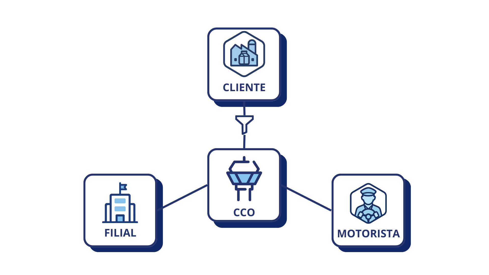
O CCO realiza o monitoramento e cobrança, coleta as informações do motorista e filial, filtra os dados e encaminha para o cliente.
O Feedback SCI é uma técnica de feedback objetiva e clara, que ajuda a pessoa a entender exatamente o que aconteceu, o que foi observado e qual foi o efeito disso no time e no resultado. Diferente do “feedback sanduíche”, o SCI foca em fatos e impacto, reduzindo interpretações e evitando desgaste nas relações.
Situação (S): descreva o contexto com data, local e cenário (quando e onde aconteceu).
Comportamento (C): relate o que a pessoa fez (ações observáveis), sem julgamentos ou rótulos.
Impacto (I): explique o efeito gerado (no SLA, no cliente, no time, na operação, na segurança, etc.).
Aplicação no CCO: como trabalhamos com pessoas e com pressão de operação, é fundamental saber realizar um feedback com qualidade para não desgastar as relações. O SCI ajuda a manter o feedback justo, específico e orientado a resultado, facilitando a abertura para mudança e melhoria contínua.
Exemplo de Feedback SCI
Situação (S): Ontem (04/03/2026), no fechamento do turno, durante o encerramento das rotas sob sua responsabilidade.
Comportamento (C): As rotas que estavam atribuídas a você não foram encerradas dentro do seu turno.
Impacto (I): Isso gerou acúmulo no dia seguinte para a outra equipe, aumentou o volume de trabalho logo no início do turno e trouxe risco de atrasos e retrabalho.
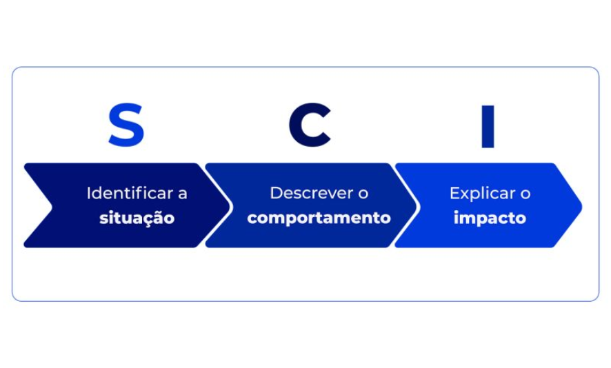
O Princípio de Pareto, também conhecido como regra 80/20, afirma que, para muitos eventos, aproximadamente 80% dos efeitos vêm de 20% das causas. Essa regra pode ser aplicada em diversas áreas, desde negócios e finanças até a vida pessoal, indicando que um pequeno número de fatores geralmente é responsável pela maior parte dos resultados.
A equipe do CCO utiliza essa técnica para focar nos maiores problemas, trazendo resultados mais rápidos e otimizados.
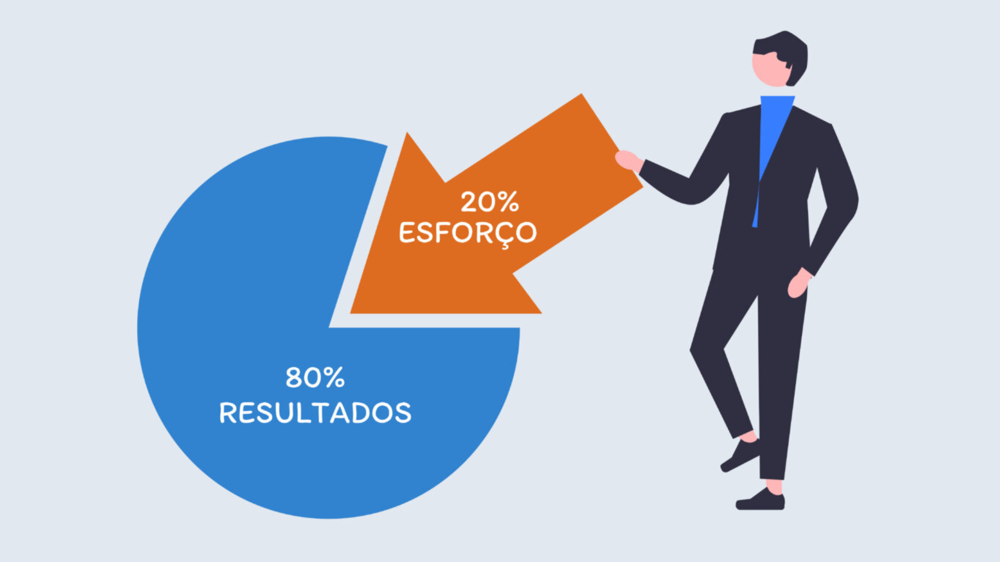
A técnica dos "5 Porquês" é uma ferramenta de análise de causa raiz, utilizada para identificar a origem de um problema ao perguntar "por quê?" repetidamente, geralmente cinco vezes. Ao questionar consecutivamente a causa de um problema, a técnica busca ir além dos sintomas superficiais e encontrar a sua causa fundamental.
Técnica mais utilizada durante o dia a dia do CCO. Ao receber as informações, precisamos agir com senso crítico, entender qual é a causa raiz do problema e resolvê-la.
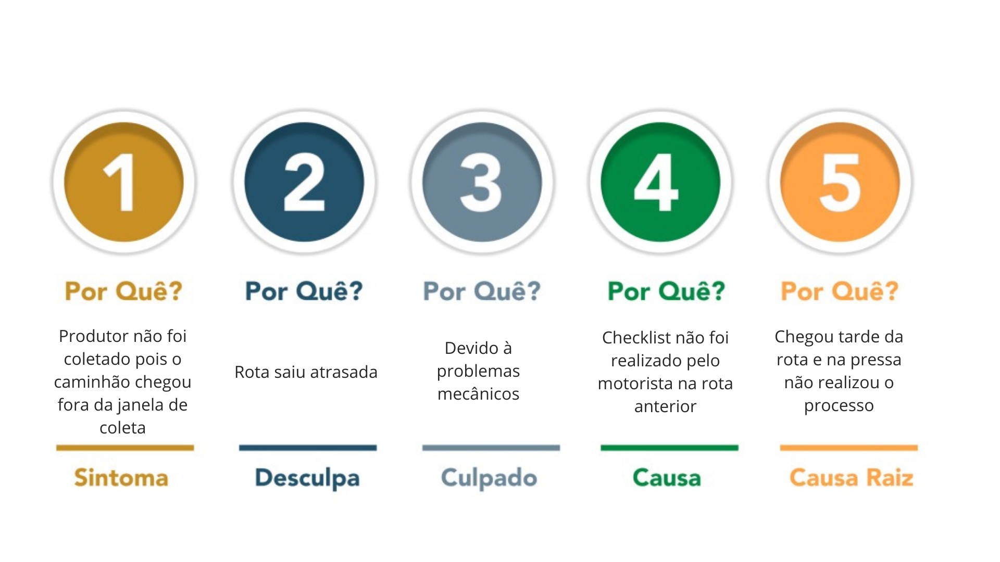
| KM | Observação |
|---|---|
| KM Rodado | Km maior entre telemetria e ponto a ponto. |
| KM Rodado adicionado | Km rodado justificado por meio de ocorrências. |
| KM Rodado total | Soma do rodado e rodado adicionado. |
| KM Previsto | Km previsto para a rota. |
| KM Previsto adicionado | Km previsto justificado por meio de ocorrências. |
| KM Previsto total | Soma do previsto e previsto adicionado. |
| KM Telemetria | Km obtido pelo rastreador do caminhão. |
| KM Ponto a ponto | Km traçando pontos do início ao fim da rota. |
| KM Diferença | Previsto total − Rodado total (valor absoluto conforme regra local). |
| KM Recebido | Km pago pelo cliente. |
| KM Justificado | Km adicionado/retirado via ocorrências. |
| KM Status |
|
| KM Total | Km menor entre previsto total e rodado total. |
| KM Fechamento | Km menor entre (previsto total e rodado total) e Km recebido. |
| KM Morto | Km não pago pelo cliente. |
Não possui reboque; é mais simples, com escala igual à rota reboque, coletando menor volume.
Opera com reboque, permitindo maior volume. O reboque fica estacionado; há ENGATE e DESENGATE.
Criada para coletas críticas (atrasos, quebras etc.), evitando impactos na operação.
É como a rota direta, mas que transborda em reboque de outra rota
Motorista separa os equipamentos necessários para a rota e realiza o checklist do caminhão (verificando todas as partes afim de encontrar problemas).
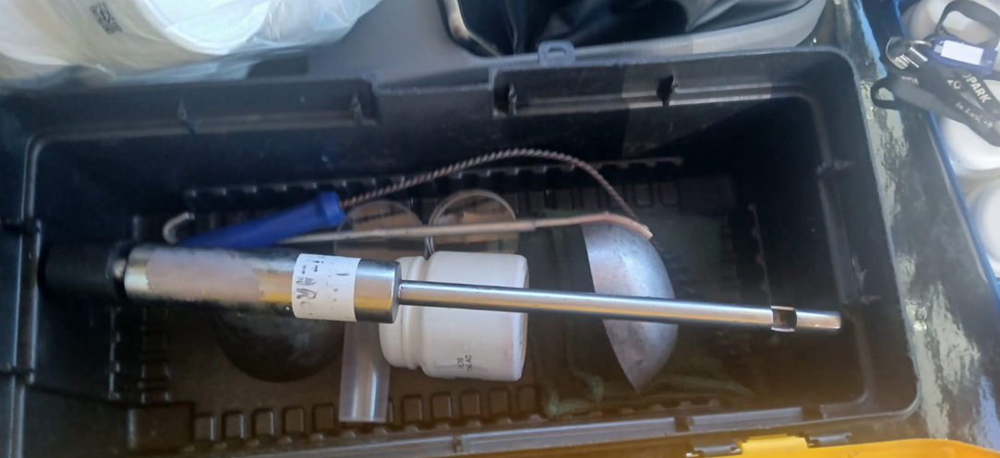
Caso a rota possua reboque, o motorista estaciona em um ponto previsto pela roteirização e o desengata, realiza as coletas e faz o transbordo para o reboque estacionado. Após realizar todas as coletas, é feito o engate e o veículo segue para o lavador.
Em rotas com reboque, após o motorista realizar parte das coletas previstas pela roteirização ele retorna para o ponto de transbordo (onde o reboque está estacionado) e transborda o leite, assim fica com o caminhão vazio novamente e pode seguir para realizar mais coletas.
Ao chegar à propriedade, o motorista estaciona de modo que o mangote alcance o tanque, registra a temperatura indicada no resfriador e a do seu termômetro, e preenche as informações no aplicativo. Em seguida realiza o teste de alizarol; se estiver conforme, homogeneíza o leite (acionando a bomba do resfriador) e mede o volume com a régua, convertendo pela tabela do produtor. Coleta as amostras para o cliente, depois conecta o mangote, abre as válvulas e transfere o leite para os compartimentos selecionados do caminhão. Ao finalizar, fecha as válvulas, recolhe o mangote, imprime e entrega o vale de fornecimento ao produtor, registrando tudo no aplicativo.
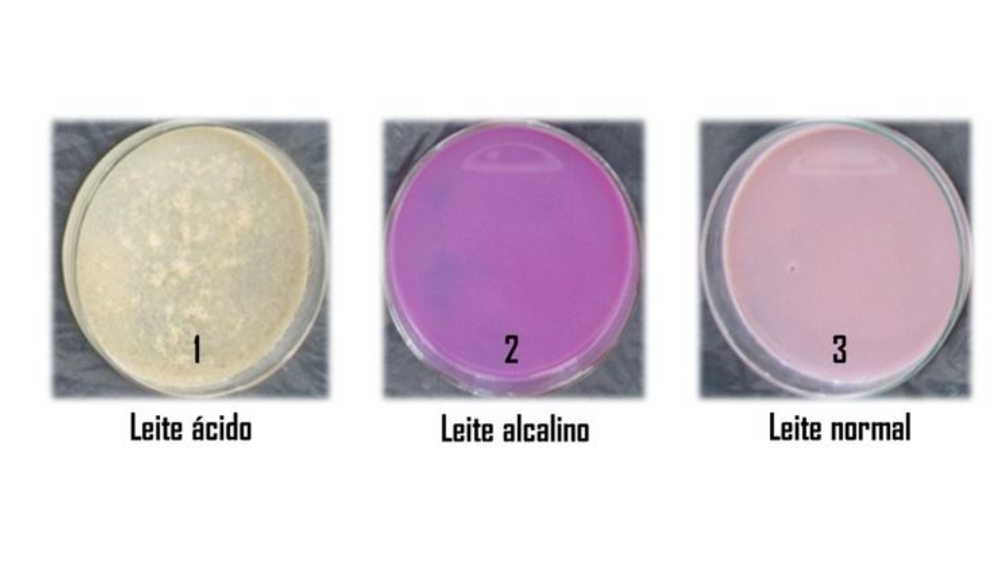
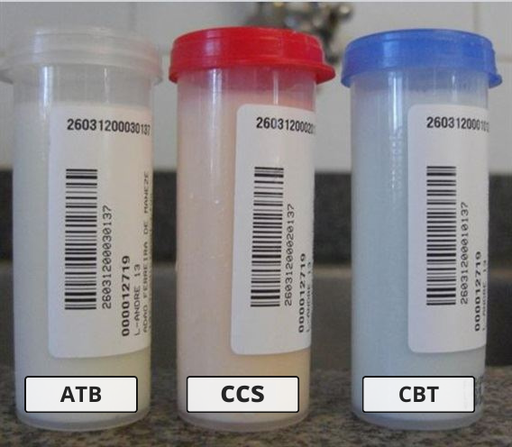
Amostra coletada em toda a rota, serve para realizar a rastreabilidade do leite nos compartimentos. Exemplo: Caso algum compartimento do caminhão reprove...
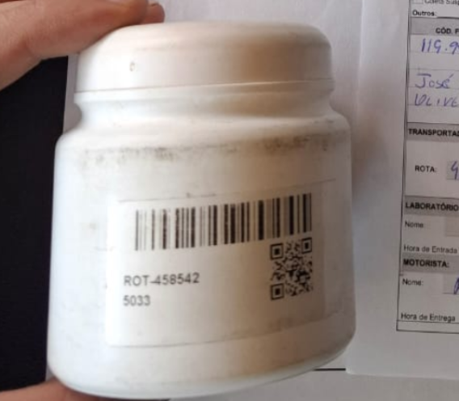
Após as coletas... não pode entrar sujo para descarregar na fábrica.
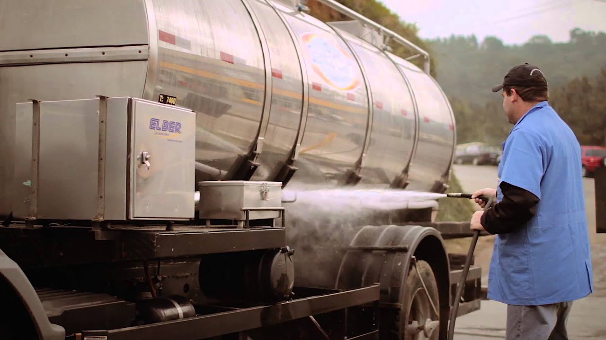
Com o caminhão lavado... Após a descarga, é realizado o CIP no tanque.
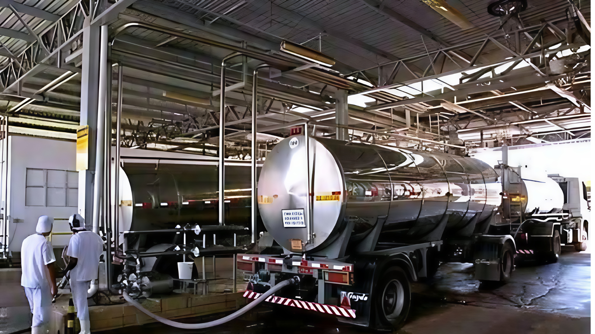
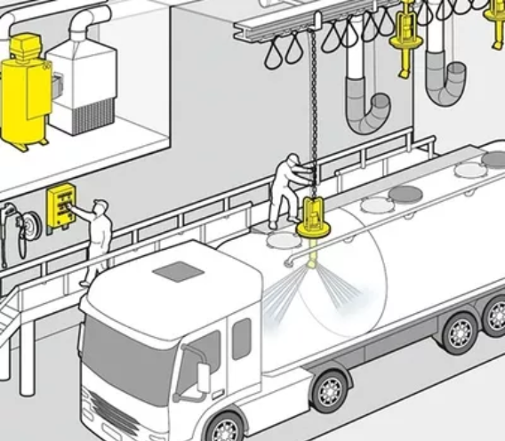
Com o caminhão liberado... Em algumas operações, o caminhão fica no pátio da própria fábrica.
A roteirização é o planejamento do trajeto... Em resumo, a roteirização torna a coleta mais eficiente, controlada e confiável.
Geralmente feita em planilhas do Excel, facilita a gestão das rotas e reúne informações como ROTA, MOTORISTA, HORÁRIO DE INÍCIO, CAMINHÃO, etc. É utilizada diariamente no CCO e enviada com antecedência para os motoristas se programarem.
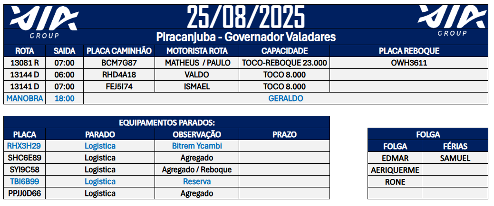
O horário de início da rota é programado... resultando em volume maior que o previsto e, consequentemente, não coletas.
Os motoristas são profissionais especializados... Se o caminhão não estiver em condições adequadas ou houver risco, a rota não é iniciada.
Uma boa comunicação evita erros, acelera soluções e fortalece o trabalho em equipe. Veja orientações simples para melhorar o contato com motoristas e entre as equipes.
Comece com educação: demonstra respeito e abre espaço para um diálogo tranquilo.
“Bom dia, Sr. Nome! Tudo bem com o senhor?”
Ao notar saída antes/depois do previsto, pergunte com calma o que aconteceu.
“Estamos acompanhando as saídas. Houve algum imprevisto (atraso ou adiantamento)? Já foi resolvido?”
“Perfeito, desejamos uma ótima rota!”
Alinhe a informação para agilizar o atendimento e garantir segurança operacional.
“Recebemos um informe sobre manutenção no seu caminhão. O senhor pode nos atualizar a situação?”
O CCO conecta Torre, Filial e Motorista para ajustar horários e otimizar processos.
“O motorista sugeriu saída às 04:30 para coleta bem-sucedida; o CCO contata a filial e ajusta o horário.”
“Não é só o que você fala, mas como você fala. Respeito, clareza e tom calmo fazem toda a diferença.”
| Causa | Descrição |
|---|---|
| Fábrica | Atraso por descarregamento ou problemas internos. |
| Logística | Falta de gestão da filial, rotas dobras, falha de comunicação etc. |
| Mão de obra | Atraso do motorista. |
| Manutenção | Manutenção necessária antes da saída. |
| Divergência de Roteirização | Janela de coleta inadequada ao horário previsto. |
| Solicitado pelo cliente | Execução em horário diferente (socorros/apoios). |
| Causa | Descrição |
|---|---|
| A rota não foi realizada | Atraso inviabilizou a coleta. |
| Alizarol Positivo | Amostra enviada ao laboratório. |
| Coletado por outra transportadora | Outra empresa realizou a coleta. |
| Descumprimento de roteirização | Não coletou conforme previsto. |
| Eqp. Cheio/Aumento de Vol. | Ordenha extra/aumento sem aviso. |
| Eqp. Cheio/Coleta Extra | Apoio em produtor crítico. |
| Eqp. Cheio/Eqp Menor | Equipamento menor que o roteirizado. |
| Eqp. Cheio/Rota Atrasada | Ordenha a mais por atraso. |
| Falta de acesso | Estrada/porteira/bloqueio. |
| Leite com antibiótico | Detecção e coleta de amostra. |
| Leite congelado | Impossibilita bombeamento. |
| Leite descartado | Irregularidades. |
| Leite quente | Atrasos/falta de luz/problemas no tanque. |
| Sem tabela/leitura | Tabela rasurada/ausente. |
| Não coletado – SDL | Solicitação do supervisor. |
| Produtor suspenso | Ex.: alizarol positivo. |
| Objeto/sujeira | Contaminação. |
| Parou de fornecer | Exclusão da rota. |
| Volume insuficiente | Abaixo do mínimo. |
| Problemas mecânicos | Quebra de equipamento/bomba. |
| Produtor solicitou | Pedido do produtor. |
| Resfriador vazio | Sem volume. |
Cada atraso/adiantamento tem uma causa específica. Padronizar como descrevemos os motivos evita dúvida do cliente, facilita auditoria e mantém a comunicação objetiva.
| Situação | Como justificar |
|---|---|
| Manutenção que impacta segurança/operação | Detalhar qual item e ação realizada. |
| Ocorrências internas do cliente (ex.: janela alterada) | Detalhar o ajuste combinado. |
| Motivos pessoais/saúde do motorista | Resumir (sem dados sensíveis). Ex.: “Motivos pessoais”. |
| Fatores climáticos/viários genéricos | Resumir de forma clara. Ex.: “Chuva intensa/estrada bloqueada”. |
Manutenção: substituição do sensor de pressão do sistema de freio às 04:10h; liberação do veículo às 04:35h.
Texto original: “O motorista saiu atrasado de casa devido a estar gripado e o tempo estar muito frio...”
Padronizado: Atraso por motivos de saúde.
Assista os vídeos diretamente aqui no portal (sem abrir o YouTube).